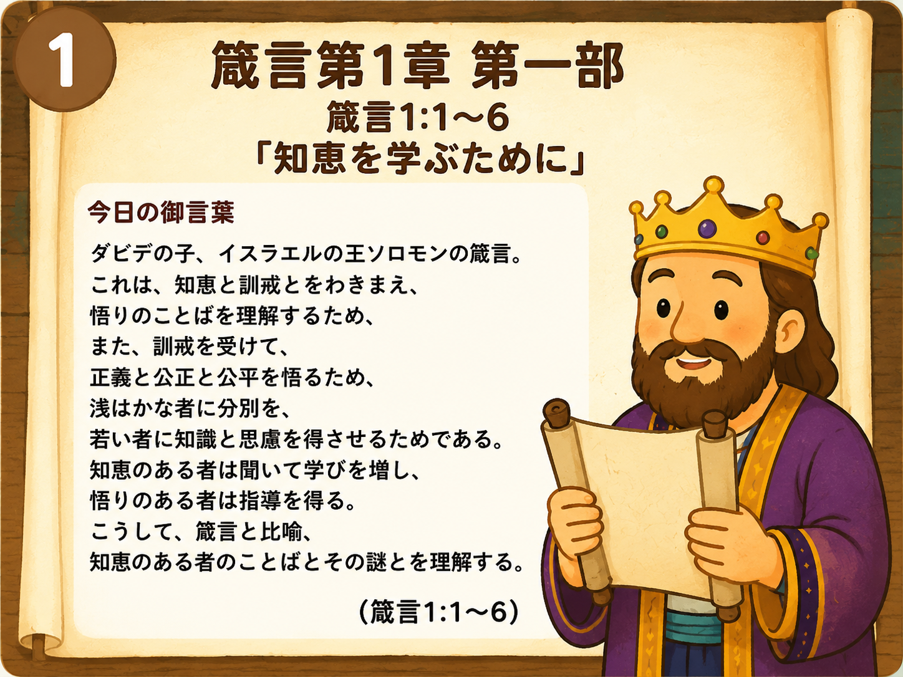

今日のポイント
- 1 箴言は人生の教科書です。
- 2 神さまの知恵は正しい道を教えてくれます。
- 3 本当の知恵とは、知ることだけでなく行うことです。
考えてみよう
最近、正しいことを選べた経験はありますか？
誰かに親切にできたことはありますか？
神さまは今日、あなたにどんなことを教えようとしているでしょうか？
🕊️ お祈り
天のお父さま。
あなたが与えてくださる知恵を学ぶことができますように。
ただ知るだけではなく、正しいことを行う勇気を与えてください。
友だちや家族を大切にし、あなたの喜ばれる道を歩めるよう助けてください。
イエスさまのお名前によってお祈りします。
あなたが与えてくださる知恵を学ぶことができますように。
ただ知るだけではなく、正しいことを行う勇気を与えてください。
友だちや家族を大切にし、あなたの喜ばれる道を歩めるよう助けてください。
イエスさまのお名前によってお祈りします。
アーメン 🙏